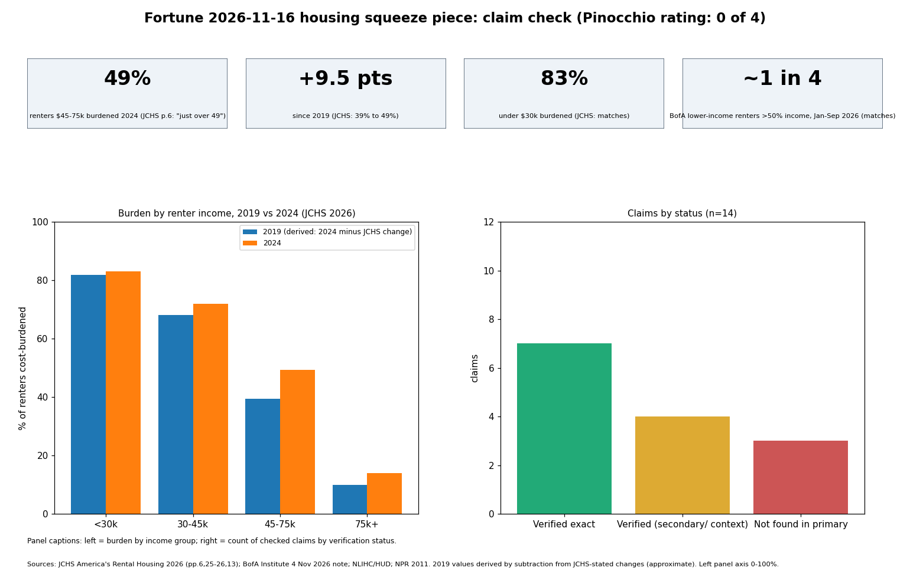

Every headline statistic I could reach in primary documents matches. Harvard JCHS America's Rental Housing 2026 says "just over 49 percent" of renters earning $45,000-$74,999 were burdened in 2024, up "9.5 points since the start of the pandemic" (39% in 2019); 83% under $30,000; 14% at $75,000+ (+4.1 points); and an income above $120,000 needed for the median-priced home. The Bank of America Institute note (4 Nov 2026) says roughly one in four lower-income renters spent over half their income on rent in Jan-Sep 2026, and about one in four higher-income mortgage holders did on mortgages. Rating: 0 Pinocchios.
| Claim | Result | Source |
|---|---|---|
| 49% of $45-75k renters burdened 2024, +9.5 pts since 2019 | Verified (39% in 2019) | JCHS 2026 |
| 83% under $30k burdened | Verified (67% severe) | JCHS 2026 |
| $75k+ renters 14%, +4.1 pts | Verified | JCHS 2026 |
| ~$120,000 needed for typical home | Verified (late 2025) | JCHS 2026 |
| BofA one in four, renters and mortgage holders | Verified | BofA Institute |
| 25% public-housing cap 1969 | Verified | Brooke Amendment, HUD |
| 30% in 1981 | Supported (secondary) | HUD User, NLIHC |
| Listings affordable at ~$75k: half in 2019, under a quarter now | Supported via JCHS official and coverage (49% to 23%); JCHS blog states a different stat, a 60% fall in affordable listings count | JCHS SONH 2026 |
| McMillan $872.96 rent, ~$275 originally | Supported (NPR 2011) | NPR |
| Rents +38%, incomes +28% | Secondary only | - |
| Homeowners $45-75k 31%, +1.1 | Not checkable here | - |
| "Week's wages for a month's rent" | Not checkable here | - |
Confidence: high on JCHS and BofA figures, medium on the rest. Board 2019 bars are derived by subtracting JCHS-stated changes (approximate).